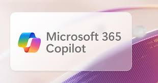

GitHub Copilot
Copilot es una inteligencia artificial desarrollada por GitHub en colaboración con OpenAI, pensada para ayudar a los programadores escribiendo código de manera más rápida y eficiente. Su primera versión se lanzó en 2021 y se basa en modelos de lenguaje entrenados con grandes cantidades de código público, lo que le permite sugerir funciones, completar líneas y hasta proponer soluciones enteras a problemas de programación a partir de descripciones en lenguaje natural. Desde el inicio, se destacó como un asistente que funciona integrado directamente en entornos de desarrollo como Visual Studio Code, lo que facilitó su adopción.
El origen de Copilot está en el modelo Codex de OpenAI, una variante de GPT-3 especializada en programación. Gracias a esto, la herramienta puede comprender múltiples lenguajes de código y adaptarse a diferentes estilos de escritura. Su lanzamiento causó gran impacto en la comunidad, ya que demostró que una IA no solo podía ayudar en tareas generales de texto, sino también en un campo técnico y preciso como la programación.
Con el tiempo, GitHub Copilot fue evolucionando, incorporando nuevas funciones como explicaciones en lenguaje natural, generación de pruebas automáticas y asistencia en tiempo real para resolver errores. Estas mejoras lo convirtieron en un recurso muy valioso tanto para principiantes como para desarrolladores experimentados, agilizando procesos y reduciendo la carga de trabajo repetitiva.
Hoy Copilot se considera uno de los asistentes de programación más influyentes, marcando un antes y un después en la relación entre desarrolladores y herramientas de software. Su impacto ha abierto el debate sobre cómo la inteligencia artificial transformará el futuro del trabajo en tecnología, y ha impulsado a otras empresas a crear soluciones similares en el ámbito de la programación asistida por IA.